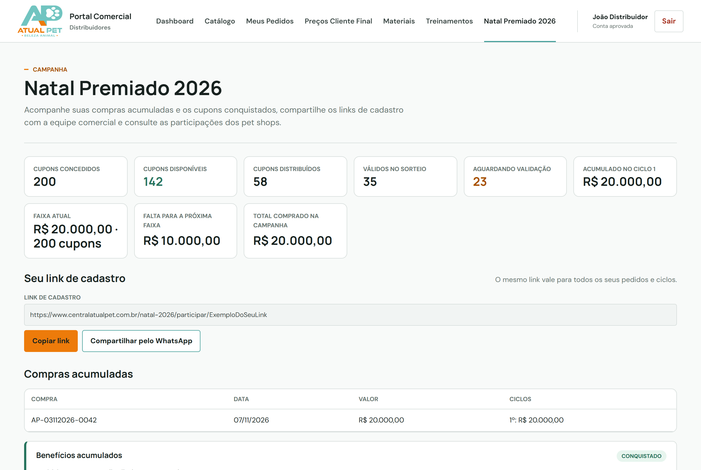
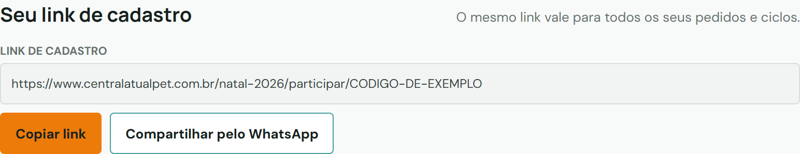
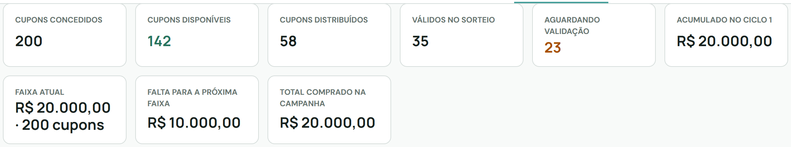
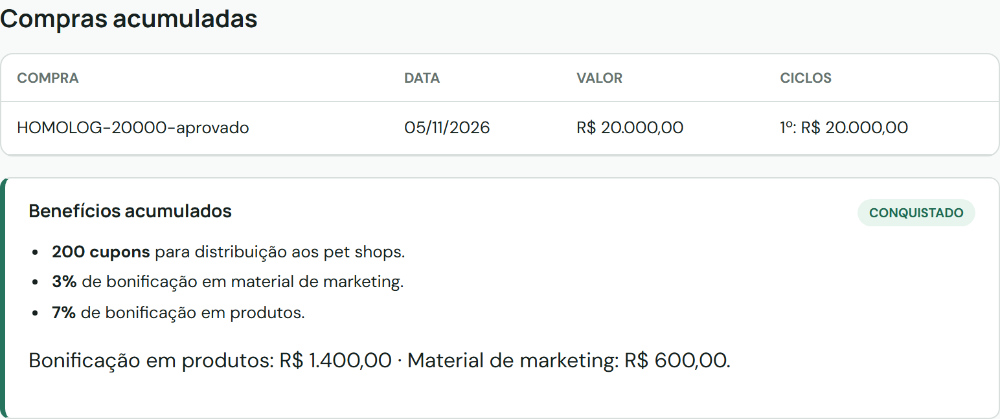
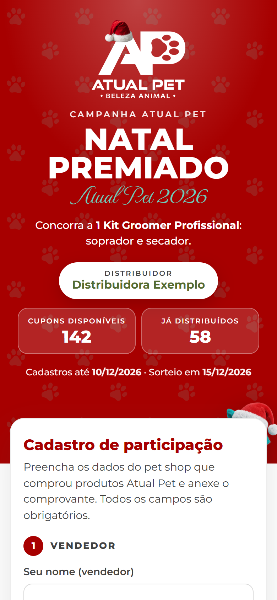
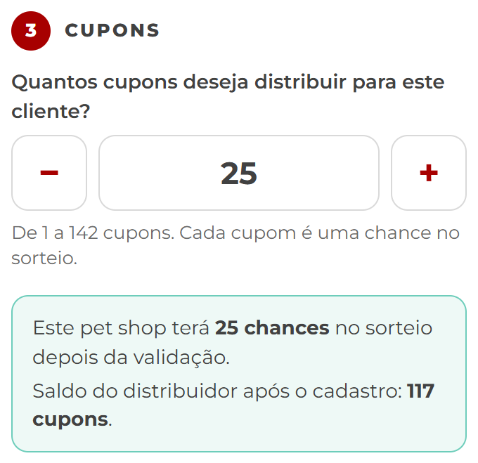
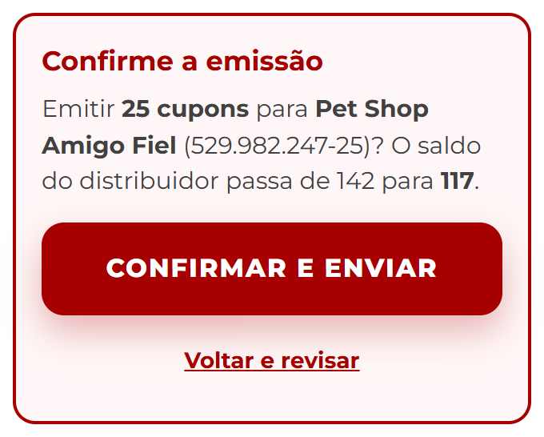
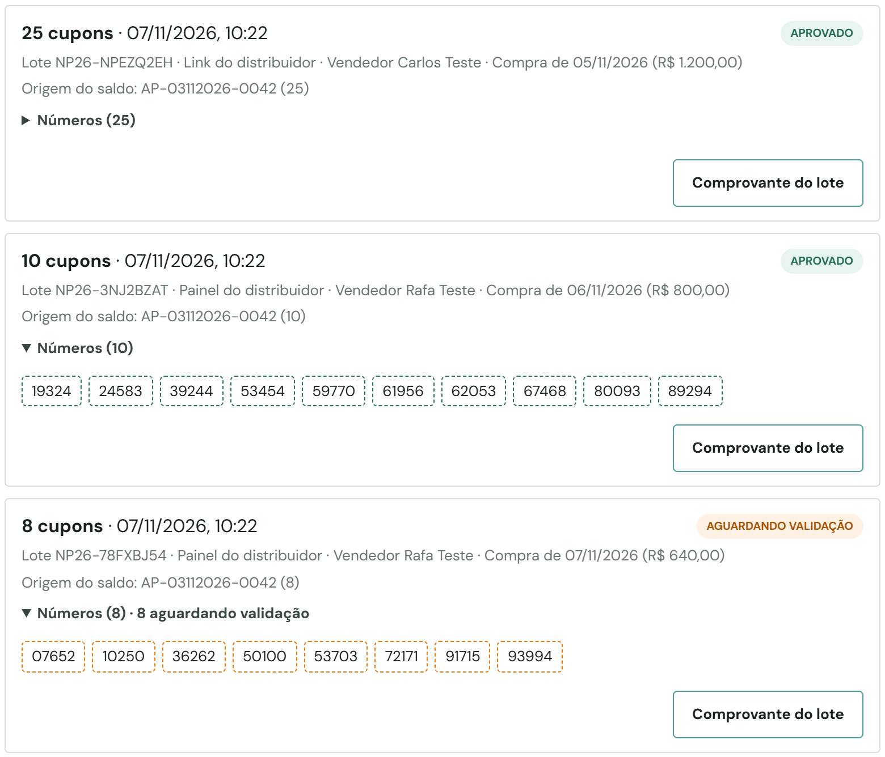
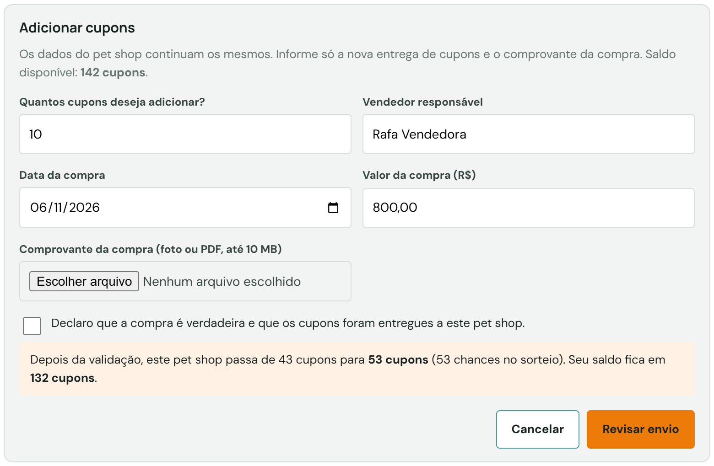

Como acompanhar seus cupons, compartilhar seu link e entregar vários cupons a cada pet shop.
Campanha03/11 a 10/12/2026
Sorteio15/12/2026
Prêmio1 Kit Groomer Profissional
Sumário
Sobre as imagens
As telas deste manual usam dados fictícios. O endereço de link mostrado nas imagens é apenas um exemplo e não funciona. Use sempre o link que aparece na sua área.
Parte 1Como a campanha funciona
Suas compras acumulam e geram cupons para distribuir aos pet shops. Você decide quantos cupons cada pet shop recebe. Cada cupom é uma chance individual no sorteio: um pet shop com 25 cupons válidos concorre com 25 números. O saldo é seu, e não de um pedido específico.
Acumulado no ciclo
Cupons
Marketing
Produtos
Abaixo de R$ 12.000
0
0%
0%
R$ 12.000 a R$ 19.999,99
100
3%
5%
R$ 20.000 a R$ 29.999,99
200
3%
7%
R$ 30.000 a R$ 39.999,99
300
3%
10%
R$ 40.000
400
3%
10%
Novos ciclos
Seu pedido conta a partir da aprovação.
Pedidos menores que R$ 12.000 também acumulam.
Ao chegar a R$ 40.000, um novo ciclo começa automaticamente.
O que passar de R$ 40.000 entra no ciclo seguinte.
Não há limite de ciclos durante a campanha.
Exemplo
Pedidos de R$ 12.000, R$ 8.000 e R$ 20.000 somam R$ 40.000 e liberam 400 cupons. Um novo pedido de R$ 12.000 abre o segundo ciclo e libera mais 100, somando 500 cupons.
Parte 2Seu link de cadastro
Onde encontrar
Entre na Central Comercial.
No menu, clique em Natal Premiado 2026.
Localize o bloco Seu link de cadastro.

Área da campanha: saldo de cupons e link no mesmo lugar.
Como compartilhar
Clique em Copiar link para colar onde preferir.
Ou clique em Compartilhar pelo WhatsApp para enviar a mensagem pronta.
Envie o link à sua equipe comercial e aos pet shops que compraram produtos Atual Pet.

Seu link, com os botões de copiar e compartilhar.
O mesmo link depois de novos pedidos
Você não precisa de um link novo a cada pedido. Quando um pedido é aprovado, os cupons adicionais entram sozinhos no saldo do link que você já usa. O endereço não muda em novos pedidos nem em novos ciclos.
Tem mais de um link?
Links recebidos antes continuam funcionando e usam o mesmo saldo. Eles ficam em Links anteriores. Para novas divulgações, use o link principal.
Primeira compra
Seu link aparece depois da aprovação da primeira compra. Ele passa a aceitar cadastros quando houver cupons disponíveis, a partir de R$ 12.000 acumulados.
Parte 3Cupons e acumulado

Indicadores do seu saldo e do ciclo atual.
Indicador
O que mostra
Cupons concedidos
Total que você conquistou
Cupons disponíveis
O que ainda pode ser entregue. Cupons aguardando validação já saem daqui.
Cupons distribuídos
Tudo o que já foi entregue aos pet shops: válidos e aguardando validação
Válidos no sorteio
Cupons validados pela Atual Pet, que já concorrem
Aguardando validação
Cupons entregues que a Atual Pet ainda vai validar
Acumulado no ciclo
Quanto você já comprou no ciclo atual
Faixa atual
Faixa alcançada no ciclo
Falta para a próxima faixa
Valor que libera mais benefícios
Total comprado na campanha
Soma de todas as compras contabilizadas
Compras e benefícios
O bloco Compras acumuladas lista cada compra e em qual ciclo ela entrou. Abaixo, veja os benefícios acumulados.

Compras acumuladas e benefícios conquistados.
Parte 4Cadastrar um pet shop com vários cupons
Um único cadastro pode receber vários cupons. Não preencha o formulário várias vezes para o mesmo pet shop.
Passo a passo
Abra o seu link de cadastro. No topo aparecem o nome do distribuidor, os cupons disponíveis e os já distribuídos.
Preencha os dados do vendedor e do pet shop.
Em Quantos cupons deseja distribuir para este cliente?, digite a quantidade ou use os botões − e +. Vale de 1 até o saldo disponível.
Confira a prévia: quantas chances o pet shop terá no sorteio e como fica o seu saldo.
Informe a data e o valor da compra e anexe o comprovante.
Clique em Enviar cadastro, confira o resumo e clique em Confirmar e enviar.

Topo do link: distribuidor e saldo de cupons.

Quantidade, chances no sorteio e saldo após o cadastro.

Confirmação antes de gerar os cupons.
O que acontece depois
A mensagem de sucesso só aparece depois que o sistema grava tudo. Ela mostra o protocolo e os números gerados, por exemplo: “Foram gerados 25 cupons para este pet shop.”
Os cupons saem do seu saldo na hora, mas só valem no sorteio depois da validação da Atual Pet.
Se a internet cair durante o envio, toque em Enviar cadastro de novo. O sistema reconhece o mesmo envio e não gera cupons em dobro.
Se dois vendedores enviarem ao mesmo tempo e o saldo não der para os dois, um deles recebe o aviso de saldo insuficiente. O saldo nunca fica negativo.
Mesmo CPF/CNPJ no seu link
Se o pet shop já tiver cadastro com você, um novo envio pelo link entra como um novo lote do mesmo cadastro. Os dados do cadastro original não mudam. Para não repetir os dados, prefira adicionar cupons pela sua área (Parte 5).
Parte 5Adicionar cupons e acompanhar cadastros
Ver os cadastros e o total de chances
Na sua área, desça até Participações cadastradas. Cada linha mostra o total de cupons, os válidos e os que aguardam validação.
Clique no pet shop para ver cada distribuição de cupons, com data, quantidade, situação e os números.

Histórico das distribuições de um pet shop: cada lote com seus números.
Adicionar cupons a um pet shop já cadastrado
Abra o pet shop e clique em Adicionar cupons.
Informe a quantidade, o vendedor, a data e o valor da compra e anexe o comprovante.
Confira a prévia e clique em Revisar envio e depois em Confirmar e adicionar.

Adicionar cupons sem repetir os dados do pet shop.
Exemplo: o Pet Shop Amigo Fiel tem 25 cupons e recebe mais 10. O cadastro continua o mesmo, os 25 anteriores continuam valendo, são gerados 10 números novos e o total passa a 35. Seu saldo diminui 10.
Validação dos novos cupons
Cada novo lote também passa pela validação da Atual Pet. Cadastros rejeitados ou cancelados não recebem cupons; nesse caso, faça um novo cadastro.
Cancelamentos
Você pode cancelar o cadastro inteiro, informando o motivo. Todos os cupons dele são cancelados e voltam ao seu saldo.
A Atual Pet pode cancelar só um lote. Os outros lotes do mesmo pet shop continuam valendo.
Cupons rejeitados na validação também voltam ao seu saldo.
Números cancelados nunca são reutilizados.
Como cada cupom participa do sorteio
Cada cupom válido é um número na lista oficial e um papel na urna.
Quanto mais cupons válidos, mais chances. O prêmio continua sendo um único Kit Groomer.
Cupons aguardando validação, rejeitados, cancelados ou invalidados não participam.
Os cadastros vão até 10/12/2026. Depois disso, nenhum cupom novo é emitido. O sorteio é em 15/12/2026.